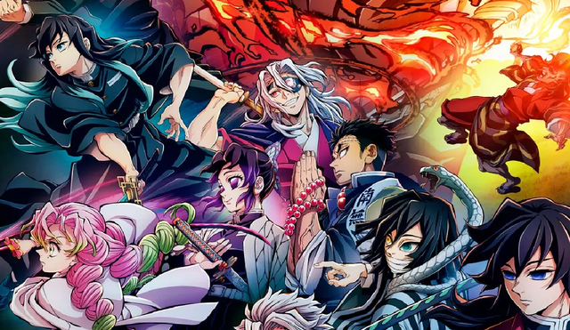

Light
Bueno, me parece que este apartado será muuy largo porque mi novia tiene muchos gustos, pero aquí les presentaré algunos de ellos:
Ella es una gran aficionada de los K-dramas, creo que se ha visto más de 100 k-dramas en toda su vida. Le gustan tanto que cada vez que termina de ver uno busca otro y lo empieza a ver, es increíble como le puede gustar tanto.
Otra cosa que le gusta mucho es el anime. Ella me dice, que antes ese era su día a día, cada vez que tenía oportunidad se ponía a ver anime, cada día de la semana. Aunque no últimamente no lo ve, supongo que no significa que le ha dejado de gustar.
Bueno, que decir de esto... Esta banda musical le encanta literalmente, es tanto su gusto por esta, que si hicieran un concierto y ella no pudiera ir vendería su riñón jjsjsjs creo que no exagero, es una loca total por sus canciones. Cuando ella se pone a cantar sus canciones las canta tan increíble, su voz se escucha tan hermosa, simplemente es maravillosa. Si no saben cuál es esta banda, aquí les dejo algunas de sus canciones:
20/12/2024 7:13 PM
maravillosa como usted. Gracias por los hermosos y alegres momento que me has dado, de verdad muchas gracias amor. Me emociona solo pensar...